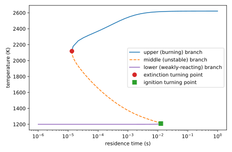
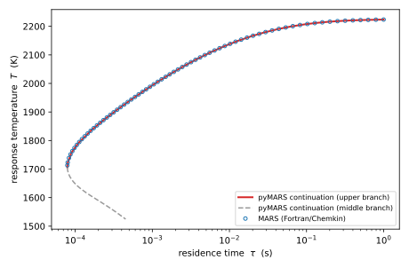

Perfectly stirred reactor (PSR) extinction¶
pyMARS can use steady perfectly stirred reactor (PSR) simulations as a source of
sampled thermochemical data and as an error metric for reduction, focused on the
reactor’s extinction turning point. Unlike autoignition and laminar flame
simulations, this computation is not built into Cantera, so pyMARS implements it
directly (in pymars.psr_solver, using Cantera only for thermodynamic and
kinetic evaluations). This page documents the underlying theory.
The approach is adapted from the original Fortran MARS code, which was built on the Sandia CHEMKIN [P2] and PSR [P3] packages; see Niemeyer & Sung [P1] for details.
The steady PSR¶
A perfectly stirred reactor is a spatially uniform reactor fed by a steady inlet stream. Modeling it as adiabatic and at constant pressure, with inlet mass fractions \(Y_{k,\mathrm{in}}\) and temperature \(T_{\mathrm{in}}\), and defining the residence time \(\tau = \rho V / \dot m\) (instantaneous mass divided by mass flow rate), the steady-state balances are
where \(\dot\omega_k\) are the net molar production rates, \(W_k\) the molecular weights, \(\rho\) the mass density, and \(h\) the mass-specific mixture enthalpy. The first set are the species balances; the second is the energy balance, which for an adiabatic reactor reduces to the statement that the outlet enthalpy equals the inlet enthalpy. (For the adiabatic case the reactor volume cancels, so the solution depends only on the residence time \(\tau\).)
The S-curve and the extinction turning point¶
Sweeping the residence time \(\tau\) and plotting the steady response temperature \(T(\tau)\) traces the classic S-shaped response curve [P4]:
an upper branch of vigorously burning solutions, which is stable; as \(\tau\) decreases (less time to react), the temperature falls slowly and then drops steeply;
a turning point at the extinction residence time \(\tau_{\mathrm{ext}}\), where the curve folds back on itself (\(\mathrm{d}\tau/\mathrm{d}T \to 0\))—a saddle-node (fold) bifurcation;
a middle branch of physically unstable solutions, and a lower branch of weakly reacting solutions.
The extinction residence time is the smallest \(\tau\) for which a burning solution exists; below it, the reactor cannot be sustained.

Complete steady PSR response curve (S-curve) for stoichiometric methane/air at 1 atm with an inlet temperature of 1200 K (GRI-Mech 3.0). The continuation traces the stable upper (burning) branch down to the extinction turning point, then the unstable middle branch up to the ignition turning point; the weakly-reacting lower branch lies just above the 1200 K inlet temperature. A high inlet temperature is used here so that both turning points fall at practical residence times.¶
The burning and middle branches and the two turning points in the figure above
are produced directly with pymars.psr_solver.
trace_extinction_curve() with stop_at_extinction=False
returns the traced branch (an array of \((\tau, T)\) pairs, ordered from
the start of the upper branch, around the extinction fold, along the middle
branch, and up to the ignition turning point) together with the three sampled
points on the burning branch. By default stop_at_extinction=True, stopping
at the extinction turning point (all that model reduction needs). The complete
S-curve, with the ignition turning point as well, appears only for a sufficiently
high inlet temperature.
import numpy as np
import cantera as ct
import matplotlib.pyplot as plt
from pymars.psr_solver import trace_extinction_curve
# inlet state: stoichiometric methane/air at 1 atm, heated to 1200 K so that
# both the extinction and ignition turning points fall at practical tau
gas = ct.Solution("gri30.yaml")
gas.set_equivalence_ratio(1.0, "CH4", {"O2": 1.0, "N2": 3.76})
gas.TP = 1200.0, ct.one_atm
result = trace_extinction_curve(gas, stop_at_extinction=False)
branch = result["branch"] # (N, 2) array of (tau, T)
i_ext = int(np.argmin(branch[:, 0])) # extinction turning point
i_ign = i_ext + int(np.argmax(branch[i_ext:, 0])) # ignition turning point
fig, ax = plt.subplots()
ax.plot(branch[: i_ext + 1, 0], branch[: i_ext + 1, 1], label="upper (burning) branch")
ax.plot(branch[i_ext:, 0], branch[i_ext:, 1], "--", label="middle (unstable) branch")
ax.plot(branch[i_ext, 0], branch[i_ext, 1], "o", label="extinction turning point")
ax.plot(branch[i_ign, 0], branch[i_ign, 1], "s", label="ignition turning point")
ax.set(xscale="log", xlabel="residence time (s)", ylabel="temperature (K)")
ax.legend()
fig.savefig("psr_scurve.pdf")
The weakly reacting lower branch in the figure (steady solutions just above the inlet temperature, up to the ignition turning point) is overlaid for completeness; it is obtained separately by solving the steady equations at fixed residence times seeded from the cold inlet state.
Why naive methods fail near extinction¶
Two obvious approaches both break down at the point of interest:
Time integration to steady state (e.g., advancing a Cantera reactor network) reaches only the stable branches, and it systematically overpredicts the extinction residence time. Started from a hot state at a residence time near extinction, the transient overshoots and falls out of the shrinking basin of attraction, extinguishing even though a stable steady burning solution still exists.
A residence-time-parametrized Newton solve (fix \(\tau\), solve the \(K+1\) steady equations for \(T\) and \(Y\)) (the approach of the original Sandia
PSRprogram [P3]) has a singular Jacobian at the fold, where the burning branch becomes vertical, so it stalls as the turning point is approached and cannot continue onto the other branches.
Pseudo-arclength continuation¶
pyMARS instead parametrizes the solution branch by arclength rather than by residence time, a classical pseudo-arclength continuation technique for tracing solution branches through turning-point bifurcations [P5, P6]. Writing the (scaled) unknown vector as
and collecting the \(K+1\) steady residuals above into \(\mathbf G(u)\), each continuation step solves the augmented system
where \(\hat t\) is the unit tangent (a secant approximation from the two previous points) and \(\Delta s\) is the arclength step. This \((K+2)\times(K+2)\) system remains non-singular through the fold, so the same solver walks smoothly down the upper branch, around the extinction turning point, and onto the middle branch. The turning point is the point of minimum \(\tau\) (equivalently, where the \(\sigma\) component of the tangent changes sign). The continuation is seeded from the adiabatic-equilibrium state (a burning point at large residence time).
This kind of arclength continuation has long been used to compute extinction and ignition turning points in combustion, for example, to trace the response curves of steady counterflow premixed [P7] and diffusion [P8] flames through their extinction and ignition limits. Here it is applied instead to the perfectly stirred reactor.
Relation to the original MARS solver¶
The original MARS code achieved the same effect using the Chemkin-based PSR
code [P3] by switching which variable is the unknown.
Its standard solver fixes the residence time and solves for
temperature and composition (well-conditioned where the curve is shallow), while
a companion solver fixes the temperature and solves for the residence time and
composition (well-conditioned through the near-vertical fold). Pseudo-arclength
continuation is the single-system equivalent of that parameter switching.
The two implementations trace the same response curve. The figure below overlays the full temperature-vs-residence-time curve computed by the original MARS Fortran/Chemkin code on the pyMARS pseudo-arclength continuation, for a stoichiometric methane/air reactor at 1 atm with an inlet temperature of 300 K (GRI-Mech 3.0). The curves agree along the entire burning branch, and the extinction residence times match to within about 0.05% (\(\tau_\mathrm{ext} = 7.899\times10^{-5}\) s for MARS versus \(7.895\times10^{-5}\) s for pyMARS).

Steady PSR temperature response curve for stoichiometric methane/air at 1 atm, \(T_\mathrm{in} = 300\) K (GRI-Mech 3.0): the original MARS Fortran/Chemkin solver (markers) versus the pyMARS pseudo-arclength continuation (lines). The continuation additionally traces the unstable middle branch past the extinction turning point, which the marching solver does not follow.¶
Sampling points and the error metric¶
From the traced burning branch, pyMARS samples three points, following MARS:
the point nearest a residence time of 0.1 s, \(\tau_{0.1}\);
the extinction turning point, \(\tau_{\mathrm{ext}}\);
the logarithmic midpoint between the two, \(\tau_{\mathrm{mid}} = \sqrt{\tau_{\mathrm{ext}}\,\tau_{0.1}}\).
The thermochemical state at these three points is added to the data used to build the reduction graphs. The PSR error metric for a candidate reduced model is the largest of the relative error in the extinction residence time and the relative errors in the response temperatures at the other two points. A candidate whose response curve cannot be traced at all (it can no longer sustain a stirred reactor) is rejected—assigned 100% error—rather than aborting the reduction, mirroring how non-igniting and non-flammable candidates are handled.
Implementation notes¶
The solver lives in pymars.psr_solver. The continuation corrector uses
SciPy’s scipy.optimize.root() with the hybr method (a modified Powell
hybrid solver) [P9], supplied with an analytic Jacobian rather
than letting the solver form one by finite differences. The Jacobian of the
chemical source terms is assembled from Cantera’s analytic reaction-rate
derivatives—specifically
net_production_rates_ddCi
(derivatives with respect to species concentrations) and
net_production_rates_ddT
(with respect to temperature)—combined with the density and enthalpy
derivatives via the chain rule. The analytic Jacobian makes the solve both more
robust and substantially faster than a finite-difference one; a finite-difference
damped Newton serves as a fallback when a step fails. Because it relies on SciPy,
PSR support requires the scipy package.
References¶
Kyle E. Niemeyer and Chih-Jen Sung. Reduced chemistry for a gasoline surrogate valid at engine-relevant conditions. Energy & Fuels, 29(2):1172–1185, 2015. doi:10.1021/ef5022126.
R. J. Kee, F. M. Rupley, E. Meeks, and J. A. Miller. CHEMKIN-III: a Fortran chemical kinetics package for the analysis of gas-phase chemical and plasma kinetics. Technical Report SAND96-8216, Sandia National Laboratories, Livermore, CA, 1996. doi:10.2172/481621.
P. Glarborg, R. J. Kee, J. F. Grcar, and J. A. Miller. PSR: a Fortran program for modeling well-stirred reactors. Technical Report SAND86-8209, Sandia National Laboratories, Livermore, CA, 1986.
Chung K. Law. Combustion Physics. Cambridge University Press, New York, 2006. doi:10.1017/CBO9780511754517.
Herbert B. Keller. Numerical solution of bifurcation and nonlinear eigenvalue problems. In Paul H. Rabinowitz, editor, Applications of Bifurcation Theory, pages 359–384. Academic Press, 1977.
Tony F. Chan. Newton-like pseudo-arclength methods for computing simple turning points. SIAM Journal on Scientific and Statistical Computing, 5(1):135–148, 1984. doi:10.1137/0905010.
V. Giovangigli and M. D. Smooke. Extinction of strained premixed laminar flames with complex chemistry. Combustion Science and Technology, 53(1):23–49, 1987. doi:10.1080/00102208708947017.
G. Balakrishnan, M. D. Smooke, and F. A. Williams. A numerical investigation of extinction and ignition limits in laminar nonpremixed counterflowing hydrogen–air streams for both elementary and reduced chemistry. Combustion and Flame, 102(3):329–340, 1995. doi:10.1016/0010-2180(95)00031-Z.
Pauli Virtanen, Ralf Gommers, Travis E. Oliphant, Matt Haberland, Tyler Reddy, David Cournapeau, Evgeni Burovski, Pearu Peterson, Warren Weckesser, Jonathan Bright, Stéfan J. van der Walt, Matthew Brett, Joshua Wilson, K. Jarrod Millman, Nikolay Mayorov, Andrew R. J. Nelson, Eric Jones, Robert Kern, Eric Larson, C J Carey, İlhan Polat, Yu Feng, Eric W. Moore, Jake VanderPlas, Denis Laxalde, Josef Perktold, Robert Cimrman, Ian Henriksen, E. A. Quintero, Charles R. Harris, Anne M. Archibald, Antônio H. Ribeiro, Fabian Pedregosa, and Paul van Mulbregt. SciPy 1.0: fundamental algorithms for scientific computing in Python. Nature Methods, 17:261–272, 2020. doi:10.1038/s41592-019-0686-2.

{kind=link}
{kind=link}